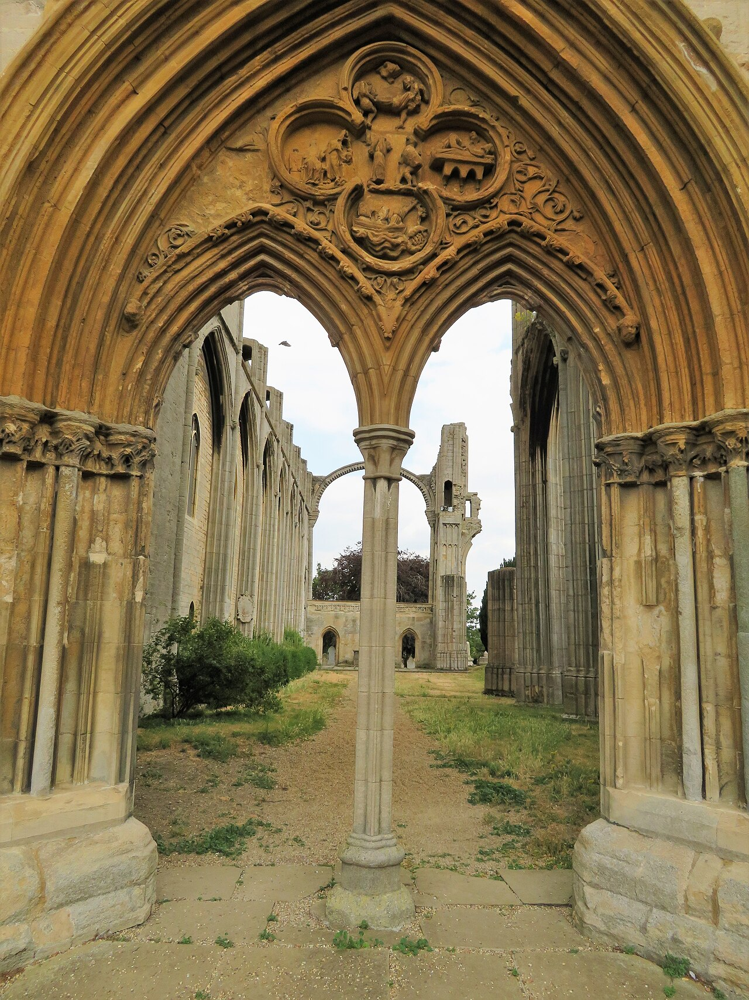

Conquerors of Wraeclast is the launch league
Recruit troops, rescue allies and storm enemy fortifications across 70+ points of interest. Castles hide treasury rooms holding a new material that reforges gear.
Everything Grinding Gear Games has announced for the full release so far, gathered so Hamza can plan a build before 11 December. Full patch notes aren't out yet, so expect details to shift.

Recruit troops, rescue allies and storm enemy fortifications across 70+ points of interest. Castles hide treasury rooms holding a new material that reforges gear.
The first sword class. Ready Stance upgrades into Sand or Blood Stance mid-fight.
The Duelist's two Ascendancies. The Knight brings a Squire companion, a War Banner and a Mounted Charge.
Daggers, traps that detonate in the order you throw them, a Darkness resource and a Shade clone.
The Shadow's two Ascendancies, announced alongside the class at ExileCon.
The eight early access classes plus Shadow and Duelist. The last two arrive in later updates.
Infernalist gets up to three Infernal Hounds, Blood Mage gets new curses, Mercenary reloading changes, Acolyte of Chayula gets a companion.
24 new areas, 18 unique bosses and more than 20 Champion Rare encounters.
The chained harbour forces you to fight your way through the city. A Rat King waits in the sewers.
Build for the Ezomyte, Maraketh or Karui and push toward 100 strongholds on a shared endgame Atlas.
A new endgame story, with up to three real-time commanders taking over Atlas progress.
More than 40 new unique items, and over 70 existing ones reworked.
Over 200 new item bases and 25 new endgame maps.
Hundreds of new passive stats, jewel sockets regrouped into clusters, and rebalanced support gems. The Atlas tree shrinks to 70 nodes.
About three times the CPU performance of 0.1.0. Optimisation saves 30+ GB, while about 40 GB of new content is added.
No purchase needed on PC, PlayStation 5 or Xbox Series X|S. Optional cosmetics, stash tabs and Supporter Packs stay.